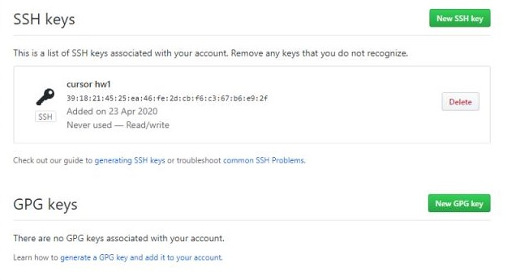

Basic commands:
- git config --global user.name "name" - input user name;
- git config --global user.email "email" - input user email;
- git init - creating the repository;
- git status - output information about the repository (status -s - short information); for more info we can use "git diff";
- git add - adding the file under control before commiting (add . - add all files in folder; git remote add origin LINK - add remote repository to GIT);
- git commit - save changes from local files to repository (commit -m "comment" - adding comment about commit; commit --amend - cancelling the commit);
- git log - output the history of all commits;
- git checkout - check/move to certain commit (checkout - move to; checkout - - move to previous commit);
- git branch - create branch from main commit;
- git push - saving changes from local to remote repository (origin "branch/main name" - saving from certain branch, after this command we can use only push);
- git pull - download changes from remote to local repository;
- git merge - connect two versions from different branches;
- git clone - copy existing repository;
- .gitignore - ignore some files while adding all files (for example: *.[a] - ignore all files, names of which end on "a");
- ls - show files in the folder;
- cd - move Git Bash to folder.
Anvanced:
- git revert - turns back to commit and allows you to change it;
- git reset HEAD - cancelling command "git add";
- git rebase - moves your branch from one to another commit;
- git cherry-pick - takes the commit from one branch and move to another;
- git stash - creates tentative version of your work without connecting to main working branch.
